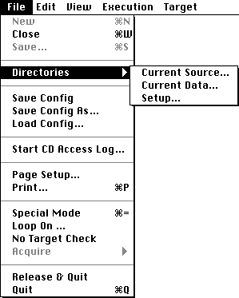
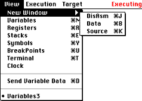
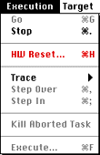
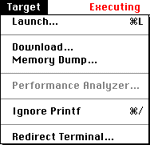
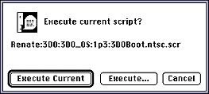
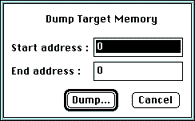
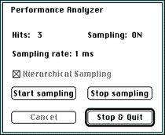

This section discusses all 3DO Debugger menu commands.
Keyboard shortcuts
Keyboard shortcuts are listed with each command and also summarized on the
Quick Reference card that is part of your documentation package.
The File menu
The File menu controls how the 3DO Debugger tool operates as an
application on the Macintosh.

Figure 1: File menu.
New
Does nothing and is always disabled.
Close
Closes the active window.
Keyboard shortcut: Command-W
Save...
Produces an ASCII text file of the active Data window.
Keyboard shortcut: Command-S
Directories...
Displays the Directories submenu, which offers the commands listed in the
following table:
Table 1: Subcommands of the Directories command.
--------------------------------------------------------
Command |Description
--------------------------------------------------------
Current |Displays the current Source Directory
Source... |pathway. To modify the current source
|directory, use Directories > Setup.
--------------------------------------------------------
Current |Displays the current Data Directory
Data... |pathway. To modify the current data
|directory, use Directories > Setup.
--------------------------------------------------------
Setup... |Presents a standard Macintosh directory
|selection dialog, which allows you to
|select the directory where source and
|data files are found. Set the source
|directory to the folder location of the
|source file, the data directory to the
|location of the .sym file.
--------------------------------------------------------
Saves the current window positions and settings as part of the preferences
file.
Save Config As...
Saves the current window positions and settings as a separate file.
Load Config...
Opens a file previously created with the Save Config As command. The file
specifies window positions and settings.
Start CD Access Log...
Causes the Debugger to start collecting information about CD-ROM access in
a log file. You are prompted for the location of the file. CD access is
performed by a number of functions in the filesystem folio. If you are
working with a version of the system that does not have a CD-ROM attached,
CD-ROM access is simulated. You can use this command to determine how much
of a program's time is spent retrieving data from the CD-ROM.
Page Setup...
Displays the standard Macintosh Page Setup dialog for changing page size,
orientation, and other defaults for printing 3DO Debugger windows.
Print...
Prints the active window.
Keyboard shortcut: Command-P
Special Mode
When you select this mode, the Debugger no longer goes through the main
event loop and gives high priority to file I/O. As a result, your program
runs much faster than in normal mode. When you select Special Mode, a
dialog informs you that you can click the mouse button or press any key to
return to normal mode.
Loop On...
Allows looping on a script, useful when preparing a standalone
demonstration program. If you select Loop On, you are prompted for a file,
which has to be a shell script or a 3DO application. The file is executed
in the foreground repeatedly until you click the mouse button or press a
key. At that time, the current cycle is executed to completion but no new
cycle is started.
No Target Check
Select this item to temporarily disconnect the Macintosh from the 3DO
Station. The Macintosh will ignore any incoming message or I/O request
from the 3DO Station. To resume normal communication, uncheck the item.
You shouldn't have to use this feature during a normal debugging session.
Acquire
This command is always disabled.
Release & Quit
Releases the 3DO Station by executing a Go command, then quits the
application. For more information on the Go command, see The Execution menu.
The View menu opens 3DO Debugger windows or brings them to the front if
they are open already. The Debugger displays a list of all Variables
windows it creates during one session at the bottom of the menu. You can
make a Variables window active by selecting it in that list. You can also
send a selected variable from the active Source window to the Variables
window that receives data for display.

Figure 3: View menu.
New Window
Opens a new Disassembly, Data, or Source window.
If you hold down the Shift key while opening a new display window, the
selection in the active window is used as the base address for the new
window.
Opens a new Variables window. To bring an already open one to the front,
select it from the list of open display windows at the bottom of the View
menu.
Keyboard shortcut: Command-M
Registers
Opens (or brings to the front) the ARM CPU Registers window.
Keyboard shortcut: Command-R
Stacks
Opens (or brings to the front) the ARM CPU Stack window.
Keyboard shortcut: Command-E
Symbols
Opens (or brings to the front) the Symbol window for the current
program.
Keyboard shortcut: Command-Y
BreakPoints
Opens (or brings to the front) the BreakPoints window.
Keyboard shortcut: Command-U
Terminal
Opens (or brings to the front) the Terminal window.
Keyboard shortcut: Command-T
Clock
Opens the Target Clock window, which displays the current ticks of the
program running on the 3DO Station in hexadecimal and microseconds.
Send Variable Data
Allows you to send a variable selected in the Source window to the
Variable window that receives data.
Keyboard shortcut: Command-D
(Open Display Windows)
Lists all openVariables windows at their examined addresses. Select one to
bring it to the front.
The Execution menu controls the execution of the program running on the
3DO Station.

Figure 4: Execution menu.
Go
Starts execution at the current value of the program counter (PC). If
you've just launched the Debugger, use this command to release the
operating system.
Keyboard shortcut: Command-G
Stop
Stops the current task on the 3DO Station but not the operating system. If
the current task was not your program but a system task, you may need to
try again.
If you know the program well, a better way to stop it is to display a
Source or Disassembly window and set a breakpoint on an instruction likely
to be executed. The program will then stop at the break.
Keyboard shortcut: Command-. (Command-Period)
HW Reset...
Prompts whether you want to reset the target hardware. If you confirm,
resets and relaunches the target when you press Command-G.
Keyboard shortcut: Command-H
Trace
Provides a menu which has a submenu of available trace options:
In-Traces into subroutines and functions. Keyboard shortcut: Command-I
Over-Traces across subroutines and functions. Keyboard shortcut:
Command-O
Step Over
Executes one instruction at the current value of the program counter (PC),
stepping over subroutines and function calls. If a Source window is active
(with the Examine field set to PC), one source line will be executed;
otherwise, one opcode will be executed. (See Note below.)
Keyboard shortcut: Command-, (Command-Comma)
Step In
Executes one instruction at the current value of the program counter (PC),
stepping into subroutines and function calls but stepping over system
calls. By default, one opcode is executed. If a Source window is active,
one source line is executed. (See Note below.)
Keyboard shortcut: Command-; (Command-Semicolon)
Note: Sometimes, the 3DO Debugger does not step and requests that a
Source window be set to PC. If that happens, create a new Source window
(Command-K) and try again. If you always keep one Source window set to PC,
this condition will never occur.
Kill Aborted Task
If a task causes an abort, the Debugger takes control. You then have two
choices: Make an appropriate change, for example, change a variable, and
then continue execution, or kill the task that caused the abort using the
Kill Aborted Task command. This allows you to execute a new task without
performing a Hardware Reset.
Execute
Prompts you for a program to execute. Using this command is similar to
typing the program's name into the Terminal window, but sets up
directories appropriately in addition to executing the program.
The Target menu controls launching, downloading, and dumping the program
running on the 3DO Station and to access the performance analyzer.

Figure 5: Target menu.
Launch...
Displays a dialog box for selecting a script to execute.
Execute Current (or pressing Return) selects the named script.
Execute lets you specify a new script.
Cancel (or pressing the Escape or Command key) lets you use the
Debugger without a script. This allows you to examine memory, but not much
else.
Keyboard shortcut: Command-L

Figure 6: Launch dialog box.
Download...
Presents a standard Macintosh file selection dialog box for downloading
binary files to the 3DO Station.
Memory Dump...
Displays a dialog box that lets you dump target RAM as a binary image
file. Enter the start and end addresses, then select Dump to create the
output binary file.

Figure 7: Memory Dump dialog box.
Performance Analyzer...
Displays the Performance Analyzer dialog box, which lets you monitor the
percentage of execution time spent in different routines.

Figure 8: Performance analyzer dialog box.
Click Start Sampling to begin collecting samples; click Stop Sampling to
pause the sampling process. Click Stop & Quit to stop the sampling
process. Output goes to a text file called 3DODebug.Perf. The
performance analyzer reports:
how much time is spent in execution of the user task and how much time
is spent on system tasks and other overhead
how much time is spent in the different functions in the user task
You can get both hierarchical and nonhierarchical samples in the report. A
hierarchical sample provides all calling functions for each function that
is called.
Note: Since the performance analyzer itself affects the performance
of the system, you only get a rough estimate of the actual performance
when you use it.
Redirect Terminal
Writes a copy of all terminal output to a file you specify.